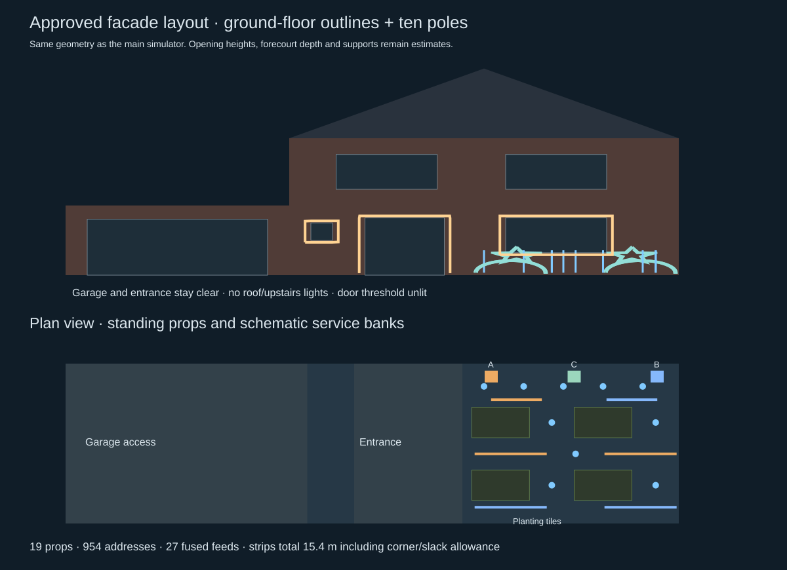
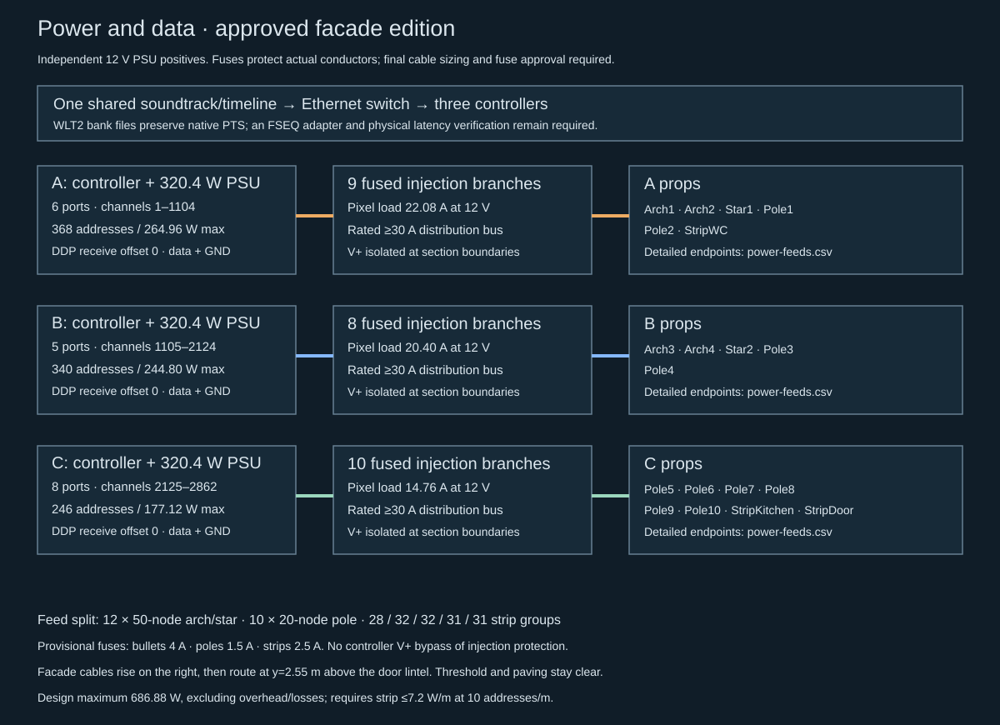

Winterlight — approved facade light show
Updated 9 October 2026 after approval of the facade preview. The main simulator, wiring overlay, channel map, parts list and stored Wizards in Winter sequence share this layout: four arches, two stars, ten 0.9 m poles, two ground-floor window outlines and one U-shaped door outline. The four former bars and 25×10 screen are removed.
1. Layout and access
The supplied plan defines one 8.50 m property, one left garage, the entrance, small WC window, kitchen window and two upstairs windows. Heights and forecourt depth remain estimated. Both ground-floor windows receive full strip outlines. Only the door sides and lintel receive strip; nothing crosses the threshold. Upstairs, roof and garage remain unlit. This approval supersedes the earlier ban on ground-floor frame mounting.
Ten 20-pixel poles have about 0.9 m lit height and sit in two staggered rows in the right garden. Four one-metre arches remain in two rows, with two low stars behind them. Garage access (x=0–3.35 m), entrance access (x=4–5.5 m) and public pavement stay clear of freestanding props and paving-level cable. The mailbox remains at the street edge. Mounting and ballast need site measurements; modeled base size is not a wind calculation.
See layout.svg for facade and plan views. The approved static view remains available at /props-preview.html; the main show is at /.
2. Pixel and strip specification
Retain or buy 800 individual 12 V WS2811 bullet pixels: 400 for arches, 200 for stars and 200 for poles. Reuse suitable existing pixels from the removed bars/panel before buying more. For a new build, 18 × 50-node strings provide 800 installed plus 100 spare, five fewer strings than the former 23-string order.
Facade strip is a separate specification: 12 V WS2811 RGB, 30 LEDs/m, three LEDs per address, 10 addresses/m, maximum 7.2 W/m at full white. Kitchen: 64 groups / 6.4 m; WC: 28 groups / 2.8 m; door: 62 groups / 6.2 m. Total: 154 groups / 15.4 m / 462 LED packages. Four 5 m rolls allow 4.6 m spare. These lengths include corner/slack allowance; measure the frames and place any excess deliberately. Do not increase density, substitute RGBW/5 V strip or change group size without updating the map, power calculation and sequence.
The simulator represents each three-LED strip group as one luminous point. Thus 954 RGB addresses is the channel count, not the physical LED-package count (1,262). Weather-rated strip does not seal cut pads, corners or connectors. Use supported removable frame channels and sealed transitions; adhesive alone is not the specified outdoor fixing method.

3. Pixel and channel schedule
| Model | RGB addresses | Global RGB channels | Bank / data port | Power feeds |
|---|
| Arch 1 | 100 | 1–300 | A / 1 | 2 |
| Arch 2 | 100 | 301–600 | A / 2 | 2 |
| Star 1 | 100 | 601–900 | A / 3 | 2 |
| Pole 1 | 20 | 901–960 | A / 4 | 1 |
| Pole 2 | 20 | 961–1020 | A / 5 | 1 |
| Small ground-floor window | 28 | 1021–1104 | A / 6 | 1 |
| Arch 3 | 100 | 1105–1404 | B / 1 | 2 |
| Arch 4 | 100 | 1405–1704 | B / 2 | 2 |
| Star 2 | 100 | 1705–2004 | B / 3 | 2 |
| Pole 3 | 20 | 2005–2064 | B / 4 | 1 |
| Pole 4 | 20 | 2065–2124 | B / 5 | 1 |
| Pole 5 | 20 | 2125–2184 | C / 1 | 1 |
| Pole 6 | 20 | 2185–2244 | C / 2 | 1 |
| Pole 7 | 20 | 2245–2304 | C / 3 | 1 |
| Pole 8 | 20 | 2305–2364 | C / 4 | 1 |
| Pole 9 | 20 | 2365–2424 | C / 5 | 1 |
| Pole 10 | 20 | 2425–2484 | C / 6 | 1 |
| Kitchen window | 64 | 2485–2676 | C / 7 | 2 |
| Door frame | 62 | 2677–2862 | C / 8 | 2 |
| Total | 954 | 2862 | 19 used outputs | 27 |
Each prop has its own controller port. No inter-prop daisy chain is required. controller-config.csv gives one-based controller-local ranges. Data runs begin at the first sample in the model; mark inputs and strip corner direction before mounting. Arches and stars retain their original numbered insertion paths; pole pixels run bottom to top. Window outlines run bottom-left → top-left → top-right → bottom-right → bottom-left, with the duplicate endpoint omitted. Door runs bottom-left → top-left → top-right → bottom-right.
4. Controllers and outputs
Keep three Baldrick8 controllers and three RSP-320-12 supplies. Current Baldrick8 documentation specifies eight WS2811-compatible outputs and DDP; the new map uses 6 / 5 / 8 outputs, with five spare across the system. No additional controller is needed.
| Bank | Addresses | Global channels | Data ports | Fused feeds | Full-white design load |
|---|
| A | 368 | 1–1104 | 6 | 9 | 264.96 W / 22.08 A |
| B | 340 | 1105–2124 | 5 | 8 | 244.80 W / 20.40 A |
| C | 246 | 2125–2862 | 8 | 10 | 177.12 W / 14.76 A |
Global FPP source ranges are A=1–1104, B=1105–2124, C=2125–2862. Each DDP receiver starts at local offset zero; do not apply the global starting channel again at the receiver. Configure actual IP addresses at commissioning, not invented addresses in this plan. For separated 510-channel E1.31 universes, A: U1=510 / U2=510 / U3=84; B: U4=510 / U5=510; C: U6=510 / U7=228. Do not mix this map with former universe assignments.
5. Wiring and power
See wiring.svg and power-feeds.csv. Each PSU is an independent positive power domain. Source each prop's fused injection feeds from its assigned bank; continue data and same-bank reference ground across internal sections, but isolate V+ between separately protected sections. Do not parallel PSU positives. The controller data harness carries data/GND; remove or isolate its positive conductor when external injection is used so it cannot bypass branch protection. Controller board supply/input wiring needs its own protection and must follow the manufacturer's power-input rules.
There are 27 independently fused feeds: 12 × 50-node arch/star sections, 10 × 20-node poles, one × 28-group WC strip, two × 32-group kitchen sections and two × 31-group door sections. Initial fuse allowances are 4 A, 1.5 A and 2.5 A respectively, subject to actual cable/connector ratings, DC interruption rating, holder, ambient conditions and fuse curves. Distribution blocks need at least A=9, B=8 and C=10 usable protected circuits, with a verified 30 A bus after derating. Eight internal data/GND links cross positive-isolated section boundaries.
Facade leads rise in the right garden to a 2.55 m high frame/wall route, pass above the door lintel, then descend along the relevant opening frame. No cable crosses the entrance at paving level. This overhead route is a proposal, not a surveyed mounting point; use frame-safe clips and inspect access/reach before fitting. Plan the actual frame-following branch runs, drip loops and strain relief. CSV cable lengths and the 3D overlay are schematic routing estimates, not order lengths. Qualify the longest first-pixel data lead; use the controller maker's supported differential solution if needed.
The selected procurement maximum is 0.72 W/address for both bullet nodes and grouped strip. That yields 686.88 W / 57.24 A total, excluding controller overhead and PSU losses, versus 756 W in the former design. This lower maximum is conditional on procuring strip at <=7.2 W/m; higher-power variants invalidate it. A's 264.96 W is the largest bank load. Retained 320.4 W supplies have nominal room for the pixel load, but full-load thermal derating and controller overhead still need verification. Software dimming is supplementary and does not size protective hardware.
Keep mains supplies dry, ventilated and protected, or obtain documented complete outdoor assemblies. Confirm site mains protection and assembly with a qualified electrician. Actual conductor sizing, voltage-drop calculation, last-pixel white test, current and enclosure temperature measurements precede outdoor operation. Existing technical research covers the separately identified regulatory research and commissioning considerations.

6. Sequencing and timing
The matching extracted Wizards in Winter soundtrack drives the stored 5,569 native frames × 2,862 channels. Original native PTS, video end (185.818967 s) and audio end (185.875737 s) are preserved. The last frame holds through the 56.770 ms audio tail, then blacks out. This is spatial reassignment of observed camera colours, not recovery of original controller commands.
| Reference role | Current prop assignment |
|---|
| Candy canes and mini/tree clusters | Four retained arches |
| Left/right wreaths | Two retained stars |
| First two roof-icicle sections | Kitchen-window outline |
| Third roof-icicle section | WC-window outline |
| Last roof-icicle section | Door sides/lintel |
| Central filmed sign | Ten pole columns, bottom-to-top; colour accents rather than text |
Nearest original RGB triplets are copied into each new prop. There is no temporal interpolation, beat generation or nominal-FPS resampling. New outlines follow the original filmed icicle activity; poles follow the sign's colour activity. Camera dim/background suppression remains the original extraction's approximation. source-mapping.json records every sampling coordinate and parent artifact hash.
Controller bank partitions contain A=1,104, B=1,020 and C=738 channels per native frame. They recombine to the exact new artifact without RGB or timestamp changes. WLT2 remains a custom preview format, not FSEQ. A fixed-interval xLights/FPP adapter must document quantization and commissioning latency before hardware playback. No real controller has been connected or commanded. The optional demo and 40 fps .wlshow export use the new geometry and map but remain separate authored approximations.
7. Cost and procurement
revised-bom.csv is the current checklist. Cost reductions come from reusing pixels, removing the panel structure and buying five fewer bullet strings for a new build. Added costs are 20 m of grouped strip, facade channels/corners, ten pole bases/diffusers, six extra power feeds and eight extra data tails versus the former design. Three assembled controller kits remain in the plan. Net delivered saving is not yet priced; earlier whole-project budget totals are superseded rather than presented as current quotes. Obtain one combined quote with matching connectors and fabrication included.
8. Deliverables and rebuild
The simulator, CSV wiring/configuration schedules, BOM, facade/plan SVGs, printable HTML guide, every-frame worksheet, timing integrity report and all bank partitions use this approved map. Run node tools/build-project.mjs or python3 work/package.py to rebuild planning files. Then re-extract/repack timing if source sampling or pixel counts change; changing a map must not silently relabel old RGB data.
The recording and source sequence are local project assets. Existing regulatory/music research is background material dated 8 October 2026, not newly verified permissions or a purchase authorization. Physical installation, FSEQ playback and acoustic/optical alignment remain commissioning tasks.